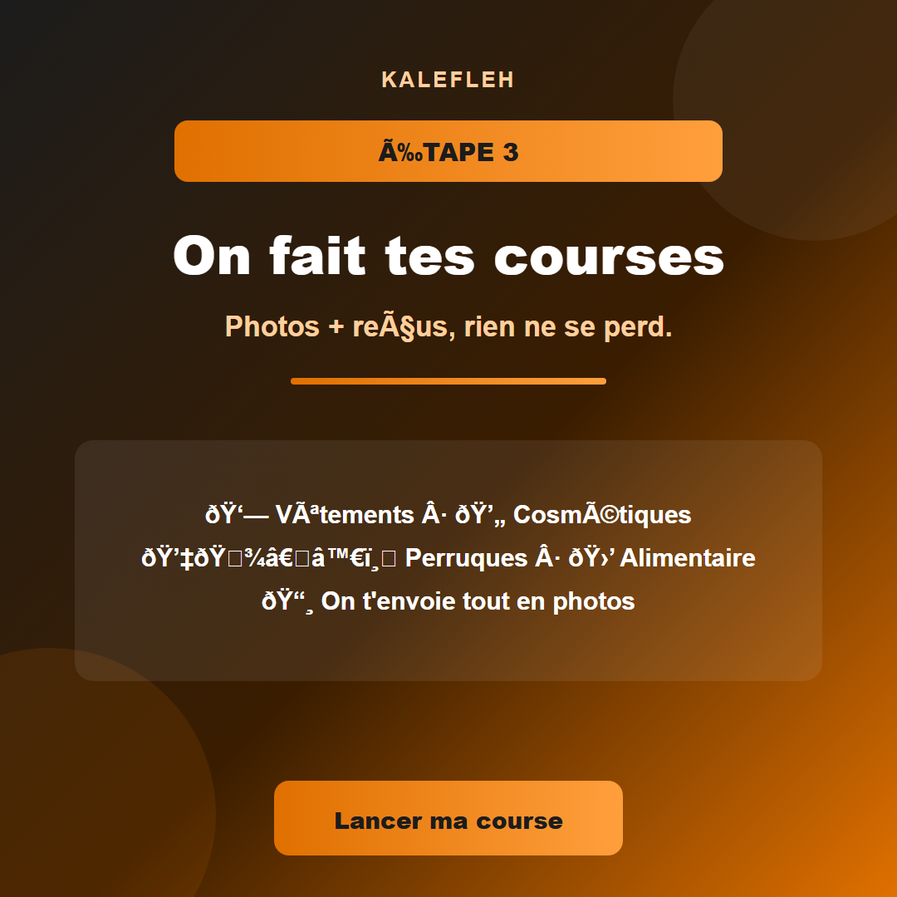

KALEFLEH — Aperçu des visuels de lancement
Affiches
Affiche carrée (1080×1080) — posts FB/IG
Affiche story (1080×1920) — Stories
Carrousel « Comment ça marche »
1. Cover
2. Étape 1
3. Étape 2

4. Étape 3
5. Étape 4
6. CTA